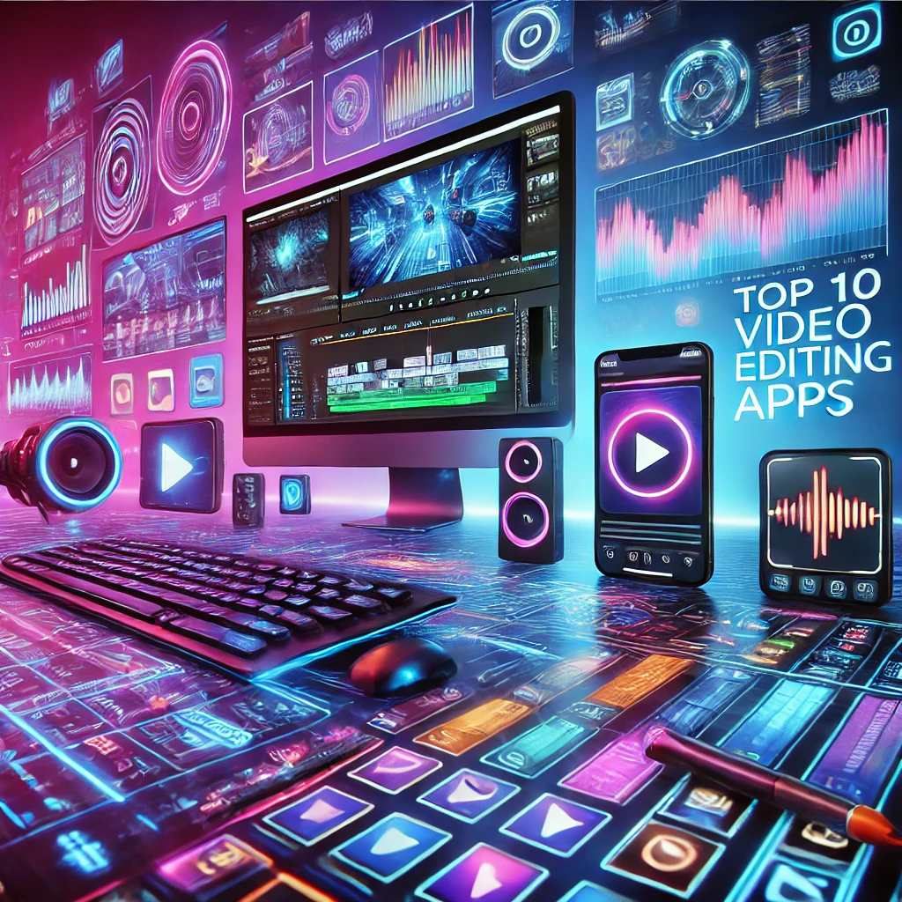

Top 10 Editing Apps for YouTube: Create Professional Videos on the Go!

Editing videos for YouTube has become more accessible than ever, thanks to the wide range of editing apps available for both beginners and professionals. Whether you're vlogging, creating gaming content, or working on a professional film, there's an app to suit your needs. In this guide, we'll explore the top 10 editing apps for YouTube, from free options to premium software, including real-world examples of YouTubers using each tool, as well as strategies for navigating complex learning curves. To make your decision easier, we've also included a comparison table summarizing key features, pricing, and platform compatibility.
Features to Look for in a Good Editing App
Before diving into the list, let's briefly touch on key factors to consider when selecting an editing app:
- Platform Compatibility: Does it work on Windows, macOS, iOS, or Android?
- Key Features: Basic tools like cutting, cropping, and transitions are essential, but more advanced creators may need color grading, audio editing, and 4K rendering.
- Price: What's your budget? Some apps are free, while others come with subscription fees or one-time purchases.
- Ease of Use: How easy is the app to learn and use, especially for beginners?
- AI-assisted Features: Many apps now offer AI tools to automate tedious tasks like audio syncing or scene transitions.
Comparison Table: Top 10 YouTube Video Editing Apps
1. Adobe Premiere Pro
Real-World Example: Many top YouTubers, such as MKBHD, use Adobe Premiere Pro for its advanced editing tools. MKBHD's tech reviews often rely on color grading, motion graphics, and precise cuts that Premiere Pro handles effortlessly.
"Adobe Premiere Pro is the industry standard for video editing, offering features like 3D editing, motion tracking, and seamless integration with other Adobe products like After Effects."
Overview: Adobe Premiere Pro is a comprehensive video editing software offering advanced features for professional creators. Its resource-heavy nature and subscription-based pricing make it ideal for creators who need top-tier functionality.
- Pros: Advanced features for professional use, seamless integration with Adobe products, excellent collaboration tools for teams.
- Cons: Expensive monthly subscription, high system requirements.
2. Final Cut Pro
Real-World Example: iJustine, a tech and lifestyle YouTuber, uses Final Cut Pro to edit her videos, leveraging its advanced color correction and multicam editing for her crisp, high-quality content.
Overview: Exclusive to macOS, Final Cut Pro is known for its streamlined workflow and robust features, including 4K HDR and 360-degree video editing.
- Pros: Advanced color grading and audio tools, optimized for Mac performance, one-time purchase (no subscription).
- Cons: Mac-only, complex timeline layout.
3. DaVinci Resolve
Real-World Example: Peter McKinnon, a filmmaker and photographer, frequently uses DaVinci Resolve for its unparalleled color grading tools.
Overview: DaVinci Resolve is a powerful free video editing tool with features usually found only in premium software. Its detailed color grading options make it ideal for creators looking to enhance their content.
- Pros: Free version has professional-grade tools, unmatched color grading options, cross-platform compatibility.
- Cons: Steep learning curve, requires a powerful system for optimal performance.
4. Adobe Premiere Rush
Real-World Example: Travel vloggers often use Adobe Premiere Rush for quick, on-the-go editing. Its mobile-first design makes it great for creators who need mobility.
Overview: Premiere Rush is a lighter version of Premiere Pro, designed for mobile editors and beginners. It integrates cloud storage, allowing users to switch between mobile and desktop workflows.
- Pros: Easy to use and mobile-optimized, cloud storage integration, affordable pricing.
- Cons: Lacks advanced features, limited mobile editing compared to desktop tools.
5. LumaFusion
Real-World Example: Mobile filmmakers like Jonathan Morrison use LumaFusion to edit high-quality videos directly on their iPads.
Overview: LumaFusion is a powerful mobile app that rivals desktop editors. It's perfect for creators who prefer editing on iOS devices, offering features like color correction, lossless export, and Dropbox integration.
- Pros: Advanced editing tools for mobile, affordable one-time purchase, supports up to 12 audio and video tracks.
- Cons: iOS-exclusive, steep learning curve for beginners.
6. WeVideo
Overview: WeVideo is a cloud-based platform ideal for collaboration and remote editing. Its multi-device access and ease of use make it perfect for teams and educators.
Real-World Example: Many educators use WeVideo for creating online tutorials. Its collaborative features make it easy for teams to edit videos together in real-time.
- Pros: Cloud-based collaboration, simple interface and presets, works on any device.
- Cons: Internet-dependent, advanced features only available in higher-priced plans.
7. Kinemaster
Overview: Kinemaster is a mobile-friendly editing app packed with features like multi-track editing, effects, and chroma key. It's widely used by vloggers who need to edit content quickly on the go.
Real-World Example: Lifestyle vloggers often use Kinemaster for its intuitive design and ability to edit complex projects directly on smartphones.
- Pros: Powerful mobile editing features, affordable pricing, easy social media sharing.
- Cons: Watermark on free version, not as powerful as desktop editors.
8. Shotcut
Overview: Shotcut is a free, open-source video editing app that supports 4K video and offers essential features like keyframing and audio filters. It's ideal for creators who need robust features without the cost.
"Shotcut is a powerful, free solution for indie filmmakers and hobbyists who need 4K video editing without breaking the bank."
- Pros: Free and open-source, 4K video support, cross-platform.
- Cons: Dated UI, requires time to learn.
9. FilmoraGo
Overview: FilmoraGo is an easy-to-use mobile app with built-in templates, effects, and music. It's perfect for beginners looking to create polished videos quickly.
Real-World Example: Beginner YouTubers often start with FilmoraGo due to its simplicity. Its preset themes and effects make video creation accessible for those with no prior editing experience.
- Pros: Free with in-app purchases, easy-to-use interface, royalty-free music library.
- Cons: Limited features for advanced editing, in-app purchases required for full functionality.
10. Lightworks
Overview: Lightworks is a professional-grade editing tool used in Hollywood films like The King's Speech. Its free version provides many high-level features but limits export resolution to 720p.
Real-World Example: Advanced creators and filmmakers use Lightworks for its robust features like multicam editing, color correction, and text effects.
- Pros: Professional-grade features, free version available, supports multi-camera editing.
- Cons: 720p export limit on free version, complex interface for beginners.
Cloud-Based Platforms for Collaboration
For teams working remotely or individuals who want to edit across multiple devices, cloud-based platforms like WeVideo and Kinemaster offer flexibility. These tools make it easy to collaborate in real-time, share projects, and access them from any device with an internet connection. However, they are reliant on stable internet access, which can be a limitation for some users.
AI-Assisted Editing: The Future of Workflow Automation
Many apps, like Adobe Premiere Pro and Final Cut Pro, now incorporate AI-assisted editing features that automate time-consuming tasks. For instance, AI can automatically adjust audio levels, create seamless scene transitions, or even suggest color corrections. These features help creators streamline their workflow and focus on creativity rather than technical editing.
Conclusion: Finding the Right Tool for You
Selecting the right video editing app depends on your skill level, budget, and content needs. Whether you're a beginner looking for a free tool like Shotcut or an experienced creator needing advanced features in Adobe Premiere Pro, there's an app for you. Consider your specific requirements, and don't hesitate to invest time in learning—plenty of resources, tutorials, and community support are available to help you master even the most complex software.